09 — Dev Tools Domination
主題
介紹chrome的開發工具，各種console.的用法
DOM BREAK ON ..
介紹了DOM的中斷點模式，分別有三種觸發模式可選（可複選）
subtree modifications: 當子元素點發生變化時
arrtibute modifications: 當元素發生變化時
node removal: 當元素被移除時
使用方法為如圖，對選取的元素按下右鍵 > Break on... 即可。
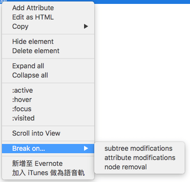
CONSOLE.THINGS
介紹各種 console 用法
1. console.log()
1 | console.log('hello'); |
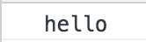
2. console.log(‘%s’, value)
可將字串中的%s顯示為指定的參數
1 | console.log('Hello I am a %s string!', ' |
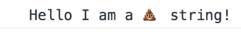
3. console.log(‘%c’, font-style)
可將字串顯示為參數中帶入的css樣式（font系列的style)
1 | console.log('%c I am some great text', 'font-size:50px; background:red; text-shadow: 10px 10px 0 blue') |
4. console.warning()
顯示為警告圖示
1 | console.warn('OH NOOO'); |
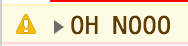
5. console.error()
顯示為錯誤圖示
1 | console.error('Shit!'); |
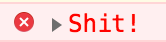
6. console.info()
顯示為資訊圖示
1 | console.info('Crocodiles eat 3-4 people per year'); |
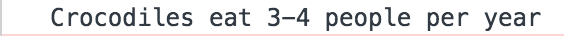
7. console.assert()
1 | const p = document.querySelector('p'); |
可以拿來測試判斷是否為真，若為false則回傳對應的錯誤訊息。
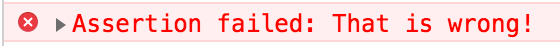
8. console.clear()
清除console的所有訊息。
補充：Mac 上清除的快捷鍵為 ⌘(Command)+K、Windows 快捷鍵則為CTRL+L
9. console.dir()
1 | console.log(p); |
可以顯示選取物件的所有屬性，
我寫的這個範例中，console.log(p)只能返回test本身的function內容，
若使用console.dir(p)則可以印出p本身及其所擁有的屬性（注意屬性第一行run）。
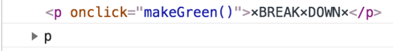
10.console.groupCollapsed() & console.groupEnd()
1 | const dogs = [{ name: 'Snickers', age: 2 }, { name: 'hugo', age: 8 }]; |
可以把輸出資訊透過group包起來。
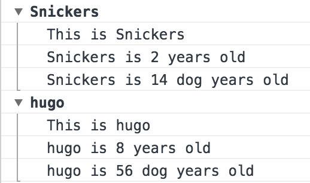
11. console.count()
1 | console.count('Wes'); |
用來累加出現次數。
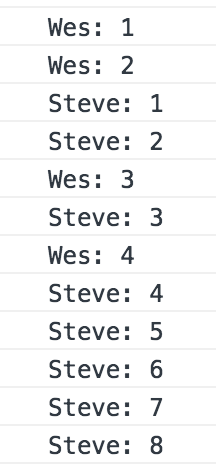
12.console.time() & console.timeEnd()
可以用來計算區域內執行的時間，我寫的範例是計算取回json資料的時間。
1 | console.time('fetching data'); |
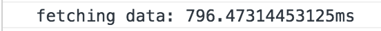
會在執行到 console.timeEnd(‘fetching data’); 時，console 出
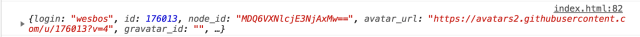
console.log(data);
13.console.table()
可以把資料整理成table格式方便瀏覽。
1 | const dogs = [{ name: 'Snickers', age: 2 }, { name: 'hugo', age: 8 }]; |
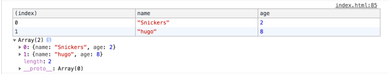
其他
還有很多可以透過開發工具來協助的，
例如監測整個網頁的讀取速度可以透過Network這個頁籤來查看，
也可以設置模擬各種網路速度、或是離線狀態等..
非常推薦觀看六角學院的免費課程，可以透過影片了解更多開發工具的操作範例。
- Post title：【JS30】Dev Tools Domination
- Post author：Neil Yang
- Create time：2019-05-17 00:00:00
- Post link：https://des86532.github.io/2019/05/17/JS30/JS30-dev-tools-domination/
- Copyright Notice：All articles in this blog are licensed under BY-NC-SA unless stating additionally.